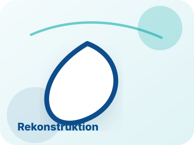

Plastische und Ästhetische Chirurgie
Formende und ästhetische Eingriffe an Gesicht, Brust und Körper sowie minimalinvasive ästhetische Medizin.
Behandlungsübersicht
Die Behandlungen sind in klare medizinische Bereiche gegliedert. So finden Patientinnen und Patienten schneller heraus, ob es um eine ästhetisch-plastische Fragestellung, eine rekonstruktive Operation, Handchirurgie oder einen Eingriff speziell für Männer geht.
Bereiche
Formende und ästhetische Eingriffe an Gesicht, Brust und Körper sowie minimalinvasive ästhetische Medizin.
Wiederherstellung von Form und Funktion, unter anderem durch mikrochirurgische Verfahren, Tumorchirurgie und Brustrekonstruktion.
Behandlung funktioneller Beschwerden, Verletzungsfolgen und Erkrankungen der Hand.
Diskrete Beratung und operative Konzepte für männliche Patienten, etwa bei Brust, Körperkontur oder Gesicht.

Korrektur von Schlupflidern oder Tränensäcken für einen wacheren, natürlichen Blick.
Mehr erfahren
Straffung von Gesicht und Kontur mit Fokus auf natürliche Wirkung.
Mehr erfahren
Ästhetische und funktionelle Harmonisierung der Nase.
Mehr erfahren
Gezielte Entspannung mimischer Muskulatur bei dynamischen Falten.
Mehr erfahren
Kontur, Volumen und Feuchtigkeitsbindung mit zurückhaltender Dosierung.
Mehr erfahren
Konzepte zur Verbesserung von Hautbild, Struktur und Ausstrahlung.
Mehr erfahren
Formung, Verkleinerung oder harmonische Anpassung der Brust.
Mehr erfahren
Formverbesserung bei abgesunkenem Gewebe und natürlichen Proportionen.
Mehr erfahren
Straffung überschüssiger Haut und Stabilisierung der Bauchkontur.
Mehr erfahren
Konturierung lokaler Fettdepots bei stabiler Ausgangssituation.
Mehr erfahren
Unterstützung körpereigener Regenerationsprozesse und Gewebequalität.
Mehr erfahren
Stimulation der Hautstruktur mit natürlicher, schrittweiser Verbesserung.
Mehr erfahren
Feine Gewebeverlagerungen und Wiederherstellung komplexer Defekte.
Mehr erfahrenEntfernung und Wiederherstellung nach Tumorerkrankungen mit funktionellem und ästhetischem Anspruch.
Mehr erfahrenRekonstruktive Verfahren nach Erkrankung, Voroperation oder Gewebeverlust.
Mehr erfahrenDiagnostik und Behandlung von Erkrankungen, Beschwerden und Verletzungsfolgen der Hand.
Mehr erfahrenDiskrete Konzepte für Brust, Körperkontur, Gesicht und rekonstruktive Fragestellungen bei Männern.
Mehr erfahrenAblauf
Anliegen, Erwartungen, Risiken und Alternativen werden besprochen.
Untersuchung, Aufklärung, Fotodokumentation bei Bedarf und realistischer Zeitplan.
Durchführung nach medizinischen Standards und mit maximaler Sorgfalt.
Nachsorge, Heilungsverlauf, Verhaltensempfehlungen und Ergebnisbeurteilung.